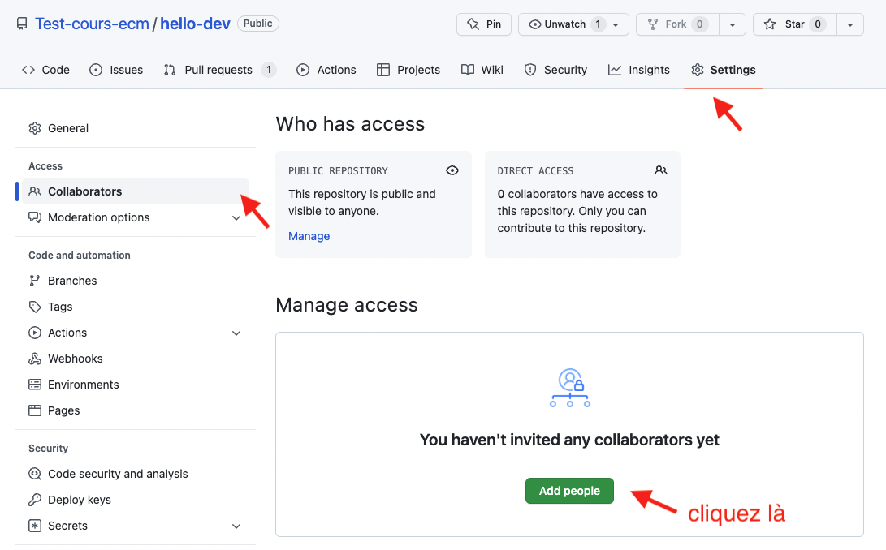
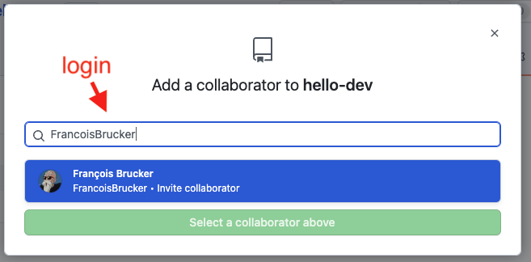
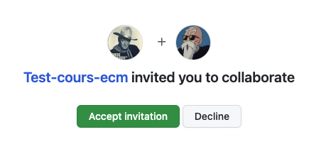
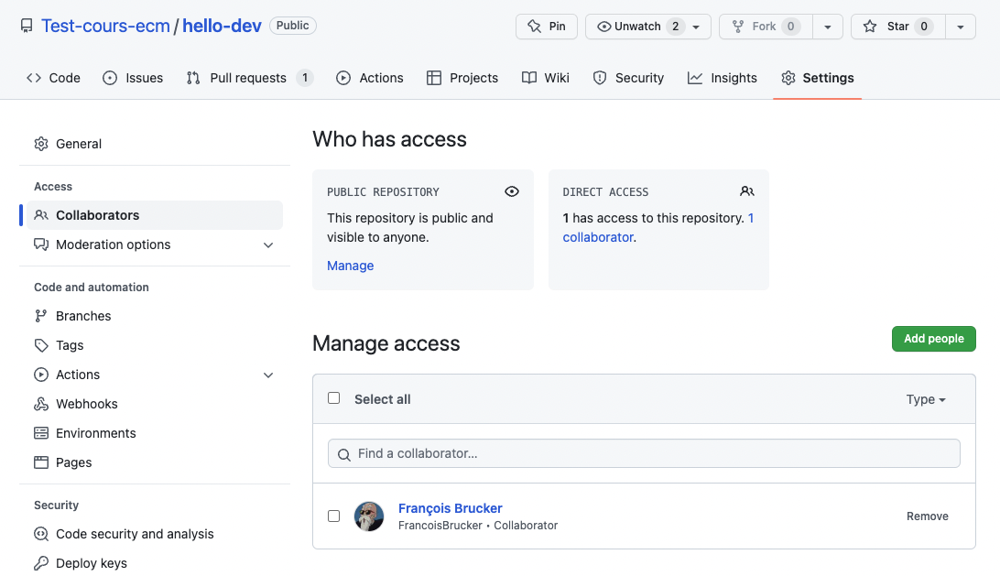
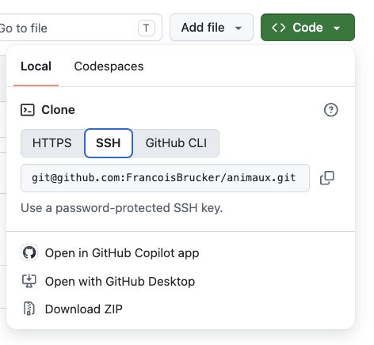

Projet : remote github
Nous allons créer un projet sur github puis le clone en local pour pouvoir y travailler. Comme nous allons utiliser une authentification ssh le plus simple est commencer par créer un projet sur github
Init du projet coté github
Création sur github
En utilisant si nécessaire un des projets précédent, créez un nouveau projet github que vous nommerez animaux. Faites en sorte que ce projet :
- soit public
- contienne un fichier readme
- ne contienne pas de fichier
.gitignore.
Ajout de collaborateurs
Vous pouvez ajouter d'autres personnes à votre projet :


- sur le compte invité, on peut accepter l'invitation :

- de retour dans l'interface du projet, on voit les collaborateurs :

Toutes les personnes peuvent maintenant ajouter et modifier des fichiers.
Init du projet coté local
Clone
Clonez le projet en ssh. Pour cela :
- copiez la chaîne de caractère du clone ssh depuis la page du projet

- dans un terminal placez vous dans un dossier pouvant contenir votre projet et tapez la commande :
git clone <votre chaîne copiée>
On suppose que :
- vous avez lié votre clé publique ssh à votre compte github
- vous avez un agent en local qui tourne avec votre clé
Vous pouvez maintenant ouvrir ce dossier comme projet vscode.
Config
Vérifiez la configuration de votre projet (c'est le fichier .git/config).
Vous devriez voir un champ réservé au serveur distant origin.
Ajout de fichiers
Le fichier .gitignore
On commence toujours par ajouter un fichier .gitignore au projet.
- Créez un fichier
.gitignoreet mettez-y le contenu du lien ci-après. - Ajoutez le au projet et commitez le tout
En faisant un git status vous devriez voir que vous êtes en avance de 1 commit sur l'origine :
On branch main
Your branch is ahead of 'origin/main' by 1 commit.
(use "git push" to publish your local commits)
nothing to commit, working tree cleanSuivons les conseilles de git :
Utilisez la commande git push pour envoyer votre fichier .gitignore sur github
Vérifiez que c'est ok !
Ajoutons d'autres fichiers
Ajoutons y 3 fichiers :
-
poissons.txtAnchois Sardine Requin -
mammifères.txtChat Homme Girafe -
oiseaux.txtPinson Mouette Goéland
Vérifiez (avec un git status qu'il y a bien 3 fichiers non suivi) puis :
- ajoutez les tous avec la commande
git add --all - refaite un git status pour voir que nos 3 fichiers ont été rajoutés à l'index
- commit le tout avec la commande
git commit -m"add 3 files" - push le tout sur l'origin
Résolution de conflit
On va :
- modifier sur le site de github un fichier
- modifier le même fichier chez nous
- tenter de pousser nos modifications sur le serveur.
situation sur github
On modifie le fichier oiseaux.txt sur github en remplaçant son contenu par :
Pinson du nord
Mouette
Gabian
Hibou petit ducEt on commit les changements :
origin : A -> Bsituation à la maison
On modifie le fichier oiseaux.txt en local en remplaçant son contenu par la liste des oiseaux par ordre alphabétique :
Goéland
Mouette
Pinson
Et on commit les changements via la commande qui fait tout en une fois :
git commit -am"modif oiseaux par ordre alphabetique"On est dans la situation :
local : A -> CSituation globale
On se retrouve dans la situation suivante, sur la même branche main :
origin : A -> B
\
local : -> CPour connaître l'état de l'origine par rapport à celui en local on utilise la commande : git fetch. On peut ensuite faire un git status pour voir ce qu'il en est :
On branch main
Your branch and 'origin/main' have diverged,
and have 1 and 1 different commits each, respectively.
(use "git pull" if you want to integrate the remote branch with yours)
nothing to commit, working tree clean
Nos développements ont divergé : github et le local différent tous deux d'un commit.
Merge ou rebase Résolution du problème
Nous pourrions faire comme précédemment et faire un merge des deux histoires. On aurait du coup un historique comme ça :
origin : A -> B --> D
\ /
nous : -> CMais notre nouvelle branche n'est pas informative. Elle ne correspond à rien d'un point de vue sémantique. C'est juste une façon de rabouter les deux main ensemble. Pour ce genre de cas (c'est à dire 90% du temps) on préfère une autre solution : le rebase.
A moins que les branches soient liées au workflow, on privilégiera toujours le rebase au merge
On va re-écrire notre histoire en fonction de l'origine, c'est à dire transformer ça :
origin : A -> B
\
nous : -> Cen ça :
origin : A -> B
\
nous : -> C'Il faut transformer notre commit C en le commit C' qui pourra s'intégrer tout seul dans l'histoire de l'origine : cette opération s'appelle un rebase.
Si vous avez suivi les instructions de configuration, c'est exactement ce que va faire un git pull.
Git rebase
Tentons de récupérer les infos de l'origin avec un git pull :
Auto-merging oiseaux.txt
CONFLICT (content): Merge conflict in oiseaux.txt
error: could not apply 6ae11b1... modif oiseaux par ordre alphabetique
hint: Resolve all conflicts manually, mark them as resolved with
hint: "git add/rm ", then run "git rebase --continue".
hint: You can instead skip this commit: run "git rebase --skip".
hint: To abort and get back to the state before "git rebase", run "git rebase --abort".
hint: Disable this message with "git config set advice.mergeConflict false"
Could not apply 6ae11b1... # modif oiseaux par ordre alphabetique
La fusion de branches automatique n'a pas fonctionné. Le fichier oiseaux.txt est devenu méconnaissable :
<<<<<<< HEAD
Pinson du nord
Mouette
Gabian
Hibou petit duc
=======
Goéland
Mouette
Pinson
>>>>>>> 6ae11b1 (modif oiseaux par ordre alphabetique)Mais on sait faire. Il suffit d'éditer le ficher dans vscode et de faire comme pour le merge dans le projet précédent. Le nouveau fichier oiseaux.txt devient :
Goéland
Hibou petit duc
Mouette
Pinson du nordOn a réglé un problème dans le rebase. On peut maintenant finaliser notre mise à jour :
- on commit nos changements :
git commit -am"oiseaux merge" - on poursuit le rebase :
git rebase --continue - on git push pour envoyer notre mise à jour au serveur.
log
Au final un git log nous donne tout ce qu'on a fait :
commit 4ec6f84ece0572b7baf01ce3468db94c5ee79692 (HEAD -> main, origin/main, origin/HEAD)
Author: François Brucker
Date: Tue Sep 29 15:44:56 2026 +0200
oiseaux merge
commit 6a1378738a6b8e02767ddbfd36151a779333932c
Author: François Brucker
Date: Tue Sep 29 15:34:11 2026 +0200
Update oiseaux.txt
commit e176710577ec2fa64cbd4a5461cdfdb7c37c62c1
Author: François Brucker
Date: Tue Sep 29 15:30:12 2026 +0200
add 3 files
commit ce8401090639b72f3d78c5bca9f87982480fbd8e
Author: François Brucker
Date: Tue Sep 29 15:20:07 2026 +0200
first commit
commit 37357b1a27be5671fd2c0aa5be22b78e9e770c09
Author: François Brucker
Date: Tue Sep 29 14:54:59 2026 +0200
Initial commit